Instruction-Level Parallelism¶
指令级并行(intruction-level parallelism, ILP)，它允许指令能够被并行计算
Static Parallelism¶
3.1 Pipeling¶
(ideal) Balanced Pipeline: Equal-length pipe stages/segments
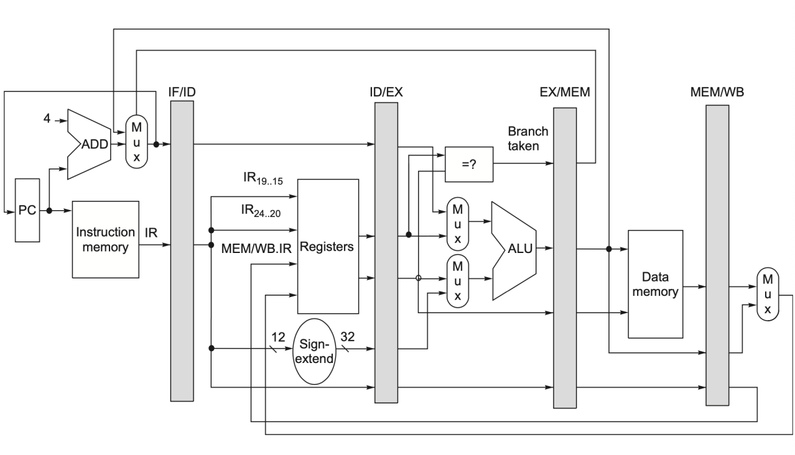
| 流水线寄存器 | 存储内容 |
|---|---|
| IF/ID | 指令 (32 bit) + PC/NPC (32 bit) |
| ID/EX | 指令 (32) + PC (32) + A (32) + B (32) + Imm (32) + 控制信号 |
| EX/MEM | 指令 (32) + ALU 结果 (32) + B (32) + cond (1) + 控制信号 |
| MEM/WB | 指令 (32) + ALU 结果 (32) + LMD (32) + 控制信号 |
3.2 Data Hazard & Forwarding¶
| Situation | Example code sequence   ; | Action |
|---|---|---|
| No dependence | ld x1, 45(x2) add x5, x6, x7 sub x8, x6, x7 or x9, x6, x7 |
No hazard possible because no dependence exists on \(x_1\) in the immediately following three instructions |
| Dependence requiring stall | ld x1, 45(x2) add x5, x1, x7 sub x8, x6, x7 or x9, x6, x7 |
Comparators detect the use of \(x_1\) in the add and stall the add (and sub and or) before the add begins EX |
| Dependence overcome by forwarding | ld x1, 45(x2) add x5, x6, x7 sub x8, x1, x7 or x9, x6, x7 |
Comparators detect use of \(x_1\) in sub and forward result of load to ALU in time for sub to begin EX |
| Dependence with accesses in order | ld x1, 45(x2) add x5, x6, x7 sub x8, x6, x7 or x9, x1, x7 |
No action required because the read of \(x_1\) by or occurs in the second half of the ID phase, while the write of the loaded data occurred in the first half |
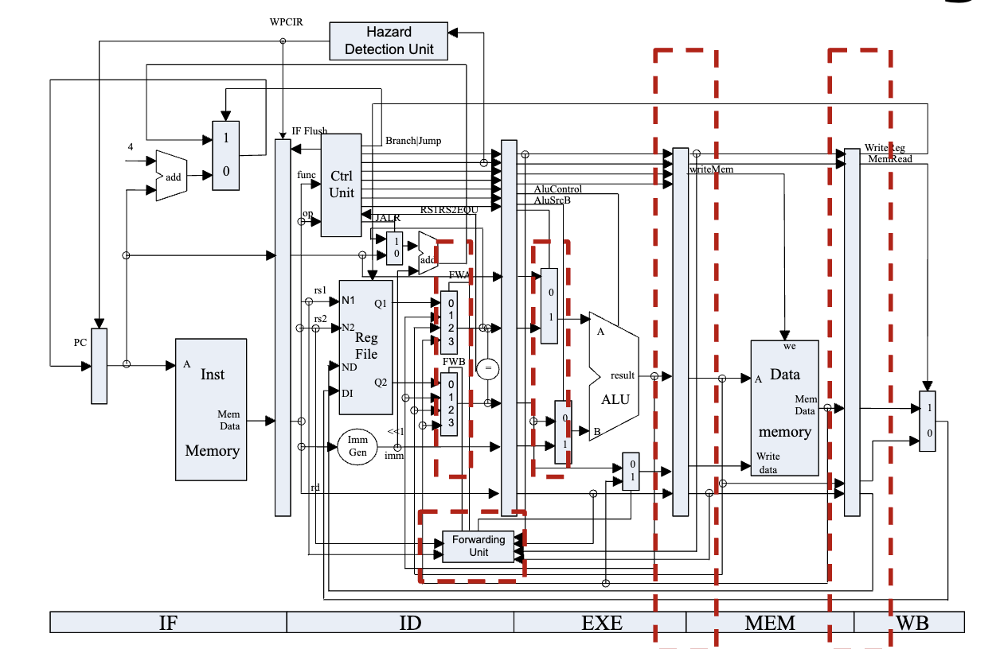
3.3 FP Operation¶
Floating-point (FP) operations take more time than integer operations do
How to complete an FP op in 1 cc?
方案1:降低时钟频率(a slow clock)
- 缺陷: slow down integer ops (整数运算性能被严重拖累)
- 整数运算占程序执行的绝大多数,为了少数浮点运算,让所有整数指令的时钟周期翻倍/数倍, 整体性能暴跌,完全得不偿失。
方案2:堆砌超大规模浮点逻辑(many logic in FP units)
- 用超大规模并行逻辑,把浮点运算的多步操作压缩到1个周期内完成。
- 缺陷: manufacturing hardness & expensiveness
- 浮点运算的长逻辑深度无法通过简单并行消除,完全不具备工程可行性
具体解决方案如下；
3.3.1 Multicycle FP Operation¶
- FP pipeline allow for a longer latency for op;
- 执行阶段（EXE）耗时超过 1 个时钟周期（take > 1 cc for EXE）
- two changes over integer pipeline:
- repeat EX;
- use multiple FP functional units; e.g., FP adder, FP divider
3.3.2 FP Pipeline¶
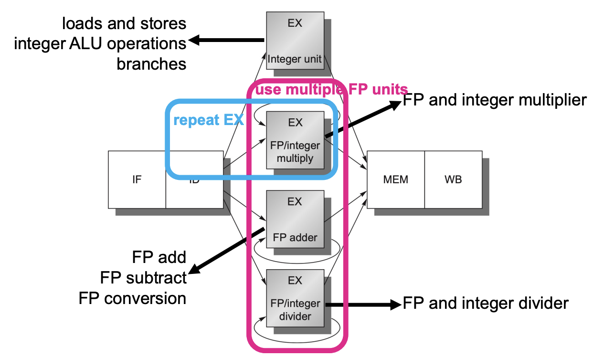
- Repeat EX：这表示一条指令可以在执行阶段停留多个周期
- use multiple FP units：为了不让慢速指令阻塞快速指令，硬件被拆分成了并行的路径
数据流向解析
- 指令分发：指令经过 IF 和 ID 后，硬件会根据指令的类型，将其送到对应的 EX 单元
- 并行执行：
- 假设此时有一条整数加法指令和一条浮点除法指令同时进入 EX 阶段
- 整数加法去最上面的 Integer unit，1 个周期就做完走了
- 浮点除法去最下面的 Divider，它在那里慢慢算，可能还要待很久
- 汇聚写回：指令执行完后会汇聚到一起，进入 MEM 和 WB 阶段，将结果写回寄存器
EX is not pipelined
- Until the previous instruction leaves EX, no other instruction using that functional unit may issue
- If an instruction cannot proceed to EX, the entire pipeline behind that instruction will be stalled
3.3.3 Latency & Ini/Repeat Interval¶
延迟（Latency）：“the number of intervening cycles between an instruction that produces a result and an instruction that uses the result”
- “数据依赖”的等待时间，下一条指令为了拿到正确的数据，需要额外等多久
- 假设指令 1 是
ADD F1, F2, F3，指令 2 是ADD F4, F1, F5，指令 1 在 EX 阶段一算出结果，硬件就可以利用 Forwarding 把数据送回 ALU 的输入端。指令 2 刚好在这个时候进入 EX 阶段。整个过程不需要任何额外等待，所以延迟是 0
启动间隔 / 重复间隔（Initiation / Repeat Interval）：“the number of cycles that must elapse between issuing two operations of a given type” - 吞吐率的倒数，即“多久能发射下一条同类指令”
- 衡量的是硬件部件的吞吐能力和流水线化程度
- 假设连续执行两条浮点除法指令
- 如果EX is not pipelined，那么必须等前一条算完，下一条才能进入
关于两者的计算：
- \(\text{Latency} = \text{FU Time} - 1\text{cc}\)
- 如果 FU 完全流水化，initiation interval 为 \(1\)
如果 FU 非流水化，那么 initiation interval 就是 \(\text{latency} + 1\)
| Functional unit | Latency | Initiation interval | Explain |
|---|---|---|---|
| Integer ALU | 0 | 1 | 可以通过 forward 传输结果 |
| Data memory (integer and FP loads) | 1 | 1 | Load 指令需要等待 1 个周期 |
| FP add | 3 | 1 | 内部是 pipelined |
| FP multiply (also integer multiply) | 6 | 1 | 内部是 pipelined |
| FP divide (also integer divide) | 24 | 25 | 内部没有完全流水线化，必须等待指令完全执行并释放资源 |
- 流水线延迟通常比 EX 流水线的深度（即该阶段产生结果需要的周期）少1个周期
Examples
-
Two (dependent) integer ALU instructions:
- Latency: \(0\) ,as no intervention to pipeline
- Initiation interval: \(1\) ,as 2nd ADD has to wait for 1 cc after 1st ADD
-
Two (dependent) instructions: Load + ADD
- Latency: \(1\), pipeline is intervened at EX stage as ADD.EX has to wait for 1 cc until Load.MEM
-
Two same-type dependent instructions: Load + Load
- Latency: \(1\)
- Initiation interval: \(1\) ,as pipelined func unit & hazard detection till ID
3.3.4 Generalized FP Pipeline¶
- EX is pipelined (except for FP divider)
- Additional pipeline registers e.g., ID/A1, M6/M7
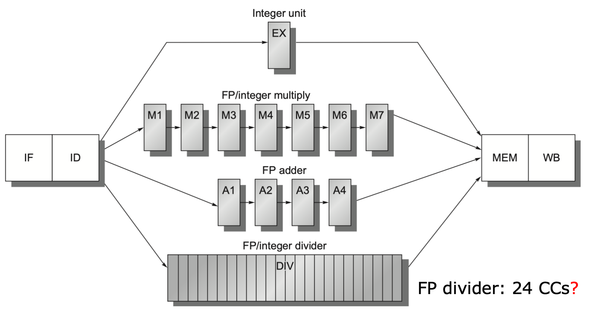
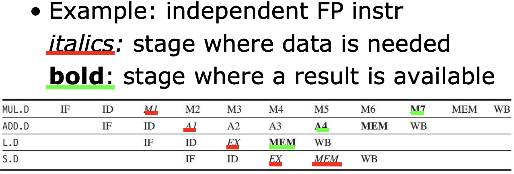
3.4 FP Pipeline Hazards¶
Exceptions：Instructions may complete in a different order than they were issued
当处理器采用多条不同长度的功能单元流水线（导致指令乱序完成）时，精确异常的实现变得非常困难。必须引入复杂的机制来解决指令乱序执行。
3.4.1 Structural Hazard¶
- Divider is not fully pipelined
- Instructions have varying running times, maybe more than one register write in a cycle
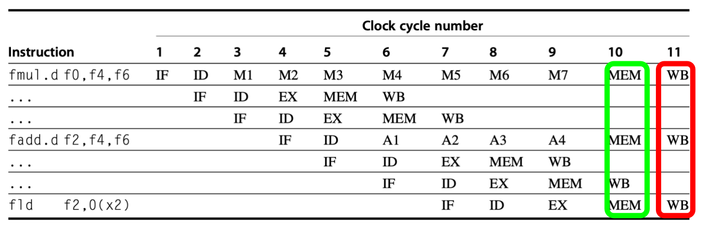
Interlock Detection（互锁检测）
- Method 1: track the use of the write port in the ID stage and stall an instruction before it issues
- 使用一个移位寄存器来追踪那些已经发射的指令将在何时使用寄存器文件
- 如果当前在指令译码阶段的指令需要在同一时间使用寄存器文件，那么就让这条新指令暂停，不要进入下一级流水线
- Method 2: stall a conflicting instruction when it tries to enter MEM/WB
- 可以选择暂停正在发射的新指令，也可以暂停已经在流水线里的指令
- 通常会给延迟最长的那个功能单元更高的优先级 (structural hazard, not data hazard)
- 这种方法更复杂，因为暂停的信号可能来自两个不同的地方（MEM 或 WB）
3.4.2 WAW Hazard¶
- Write after write (WAW) hazard：Instructions no longer reach WB in order
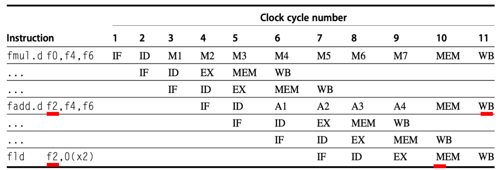
- Solution 1: delay issuing fld
- 直接在发射阶段（ID/Issue）拦住
fld，直到fadd.d过了 WB 阶段
- 直接在发射阶段（ID/Issue）拦住
- Solution 2: zero write control of fadd.d
- 当
fadd.d到达 WB 时，关闭它的“写使能信号”（置零），不允许指令写入 - Make sure that fld decides F2 state
- 当
3.4.3 RAW Hazard¶
Longer latency of operations: more frequent stalls for read after write (RAW) hazards
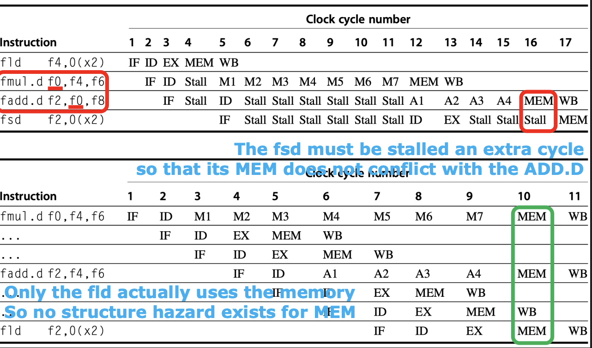
- 数据冒险导致的停顿：
fmul.d需要f4，但fld还没写回，所以fmul.d在 ID 阶段停顿fadd.d需要f0，但fmul.d还没写完，所以fadd.d也被迫停顿
- 结构冒险导致的停顿：
fadd.d正在执行 MEM 阶段（写回前的内存访问或缓冲阶段）fsd也需要执行 MEM 阶段（写入数据到内存）- 如果硬件只有一个内存访问端口或写回总线，这两条指令就会发生冲突。
- 结果： "The fsd must be stalled an extra cycle"，以避免在 MEM 阶段发生冲突
- 下半部分：
- Only the fld actually uses the memory... So no structure hazard exists for MEM
- 只有
fld真正使用了内存，所以在 MEM 阶段不存在结构冒险
3.4 Detect and Solve Hazards¶
3.4.1 Hazard Detection in ID¶
- Check for structural hazards
- 硬件资源冲突：wait until the required functional unit is not busy (only for divides);
- 写回端口冲突：make sure the register write port is available when it will be needed
- Check for RAW data hazards
- wait until source registers are available when needed --- when they are not pending destinations of issued instructions
- 在ID阶段，处理器会检查当前指令需要的源寄存器。它会通过查表（通常叫保留站或状态表）查看这些寄存器是否被之前的指令“预定”，但还没写完
- Check for WAW data hazards
- determine if any instruction in A1-A4, D, M1-M7 has the same register destination as this instruction;
- if so, stall the issue of the instr in ID（This is a simplified version;）
- more complex: detect instr in ID might finish before an issued instr, knowing pipeline length and its current position
3.4.2 Forwarding¶
所有可能产生前递数据的来源点：
- EX/MEM：来自整数运算单元。
- A4/MEM：来自浮点加法器（共4级，A4 是最后一级）
- M7/MEM：来自浮点/整数乘法器（共7级，M7 是最后一级）
- D/MEM：来自浮点/整数除法器（最后一级）
- MEM/WB：来自内存访问阶段（通常用于 Load 指令）
这些结果最终都要“-> source registers of an FP instruction”（转发给一条浮点指令的源操作数）
- 这意味着，无论数据是由加法、乘法、除法还是整数运算产生的，只要它已经计算完成，就可以通过前递网络，直接提供给正在执行（例如在 A1 或 M1 阶段）的浮点指令使用。
3.4.3 Out-of-Order Completion¶
Out-of-order completion: instructions are completing in a different order than they were issued
fdiv.d f0,f2,f4
fadd.d f10,f10,f8
fsub.d f12,f12,f14
- ADD and SUB complete before DIV
How to deal with out-of-order?
- Ignore the problem
- Absolutely wrong
- Buffer the results of an operation until all the operations issued earlier complete
- 重排序缓冲区（Reorder Buffer, ROB）技术：指令可以乱序执行，计算结果先暂存在缓冲区里。当该指令前面的所有指令都顺利执行完毕后，这条指令的结果才会被正式提交；如果前面的指令出错了，缓冲区里的后续结果直接丢弃。
- Track what operations were in the pipeline and their PCs for trap-handling
- 硬件记录下哪些指令乱序，以及它们对应的地址（PC）。当异常发生时，硬件需要非常复杂的逻辑去判断需要进行哪些操作。
- Issue an instruction only if it is certain that all previous instructions will complete without exception
- 把乱序执行退化成了顺序执行（In-Order Execution）
3.5 MIPS R4000¶
3.5.1 Superpipelining¶
Superpipelining：采用 8 级流水线
- 指令获取阶段被拆分为 IF（取指） 和 IS（指令译码/调度）
- 数据访问阶段被拆分为 DF（数据取指）、DS（数据调度）、TC（传输完成）
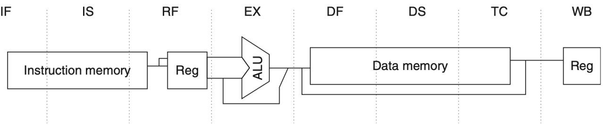
- Instruction Fetch
将访存拆分为 IF 和 IS，是为了避免单个阶段延迟过长，限制了主频- IF (Instruction Fetch - 前半部分)：启动取指过程
- PC Selection：确定下一条指令的地址（PC 值）
- Initiation of I-Cache Access：向指令缓存发送请求，开始读取指令
- IS (Instruction Fetch - 后半部分)：完成取指
- Completion of I-Cache Access：等待缓存返回数据，正式拿到指令
- IF (Instruction Fetch - 前半部分)：启动取指过程
- Decode & Register Fetch
- RF (Register Fetch)：准备工作
- Instruction Decode：翻译指令，看懂要做什么
- Register Fetch：从寄存器堆中读取源操作数
- Hazard Checking：检测冒险，决定是否需要暂停流水线
- I-Cache Hit Detection：检查 IF/IS 阶段取指令时，缓存是否命中（没命中就去内存拿）
- RF (Register Fetch)：准备工作
- Execution
- ALU Operation：进行加减乘除或逻辑运算。
- Effective Address Calculation：如果是 Load/Store 指令，计算内存地址
- Branch Target & Condition：计算跳转地址，并判断跳转条件是否满足（决定是否跳转）
- Data Access
这是 R4000 最独特的地方，为了处理数据缓存（D-Cache）的延迟，将原本 5 级流水线中的 MEM 阶段拆分成了 DF, DS, TC 三个阶段- DF (Data Fetch - 前半部分)：启动访问
- First half of data access：向数据缓存发起访问请求
- DS (Data Fetch - 后半部分)：完成数据的获取
- Second half of data access：继续访问过程
- TC (Tag Check)：确认数据有效性
- Completion of D-Cache Access：完成数据缓存的物理读取。
- Determine whether D-Cache hit：检查标签（Tag），确认刚才访问的数据在缓存中是否存在（命中）
- DF (Data Fetch - 前半部分)：启动访问
- Write Back
- For Loads：将从内存读到的数据写入寄存器
- For Reg-Reg Ops：将 ALU 计算的结果写入寄存器
3.5.2 Delay¶
Load Delay¶
2-cycle load delay (per the subsequent pipeline diagram)
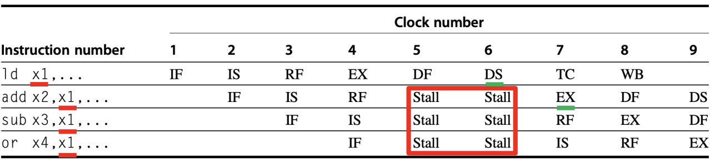
- DS: second half of data fetch completion of data cache access;
Warning
MEM 阶段的读数在该阶段末期才完成，因此需要 stall，不能直接 foward
EXE 阶段由于 ALU 计算很快，前半阶段就能完成计算并前递
Branch Delay¶
3-cycle branch delay: condition test- EX
- 处理器采用 预测不跳转（Predicted-Not-Taken） 策略，即假设分支不会发生，继续顺序取指（在计算出结果即 EX 阶段时，读入三条指令：Instruction 1, 2, 3）
- Instruction 1：称作延迟槽（Delay Slot），无论是否跳转，这条指令必须被执行
- Instruction 2,3：假设程序不跳转时需要执行的指令
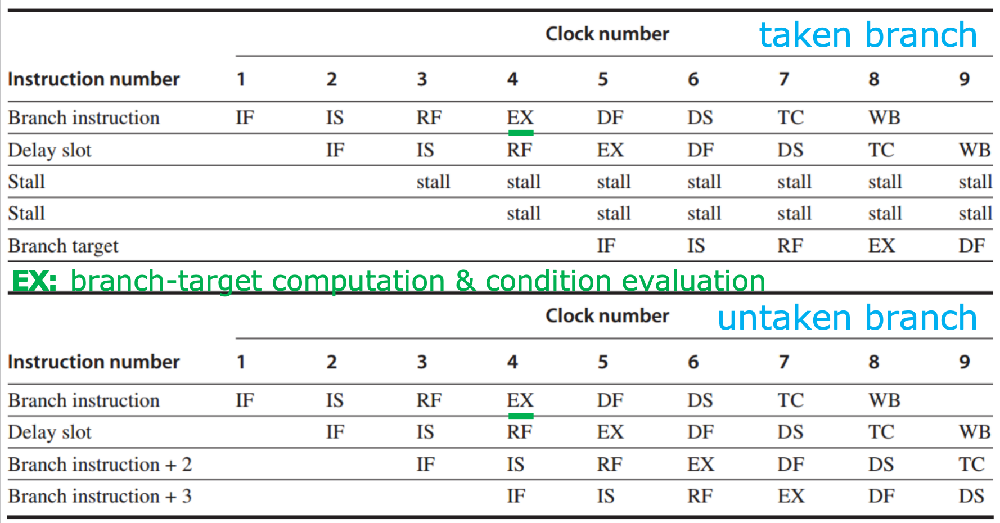
- 3-cycle branch delay: for taken predicted-not-taken（预测错误）
- 必须把 Instr 2 和 Instr 3 清空（Flush） 掉
- 浪费了3个时钟周期，Target 指令直到 Clock 5 才开始进入 IF 阶段
- 1-cycle branch delay: for untaken predicted-not-taken（预测正确）
- 只有 1 个周期 的延迟（即必须执行的 Delay Slot 指令 Instr 1）
3.5.3 Forwarding¶
ALU/MEM or MEM/WB 的结果可以前递到 EX/DF, DF/DS, DS/TC, TC/WB
3.5.4 FP Operations¶
FP unit with eight different stages¶
| Stage | Functional unit | Description |
|---|---|---|
| U | Unpack FP numbers（将浮点数的符号位、指数位和尾数位分离） | |
| S | FP adder | Operand shift stage（对阶，使得两个浮点数指数一致） |
| A | FP adder | Mantissa add stage（尾数相加） |
| M | FP multiplier | First stage of multiplier |
| N | FP multiplier | Second stage of multiplier |
| E | FP multiplier | Exception test stage（异常测试，如是否溢出、是否为 NaN） |
| R | FP adder | Rounding stage（舍入处理，确保结果符合 IEEE 754 标准） |
| D | FP divider | Divide pipeline stage |
Latency & Initiation Interval¶
| FP instruction | Latency | Initiation interval | Pipe stages |
|---|---|---|---|
| Add, subtract | 4 | 3 | U, S+A, A+R, R+S |
| Multiply | 8 | 4 | U, E+M, M, M, M, N, N+A, R |
| Divide | 36 | 35 | U, A, R, \(D^{28}\) , D+A, D+R, D+A, D+R, A, R |
| Square root | 112 | 111 | U, E, \((A+R)^{108}\) , A, R |
| Negate | 2 | 1 | U, S |
| Absolute value | 2 | 1 | U, S |
| FP compare | 3 | 2 | U, A, R |
FP Op Examples¶
FP multiply + FP add
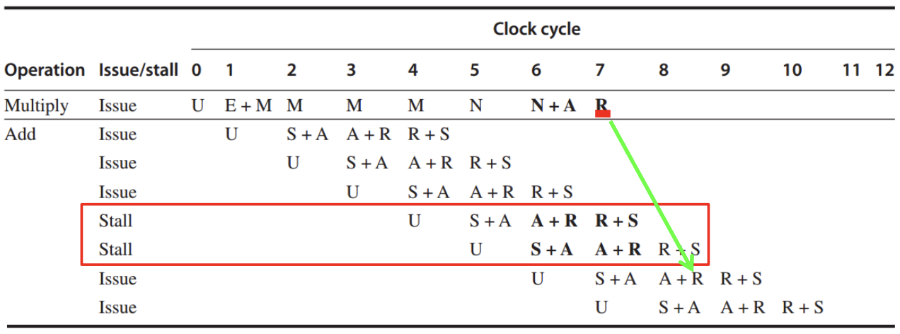
FP add + FP multiply
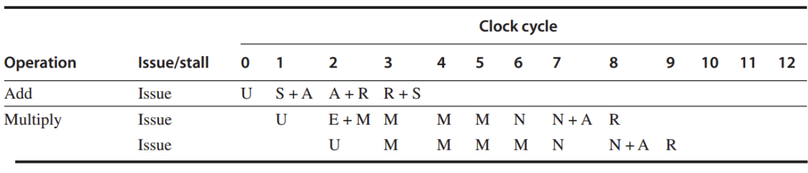
Divide + add
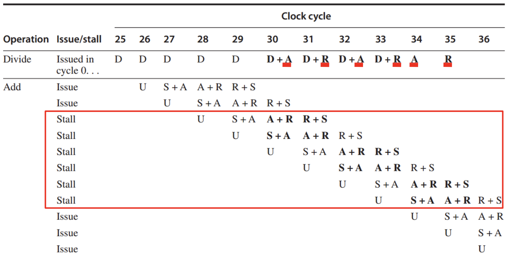
FP add + FP divide
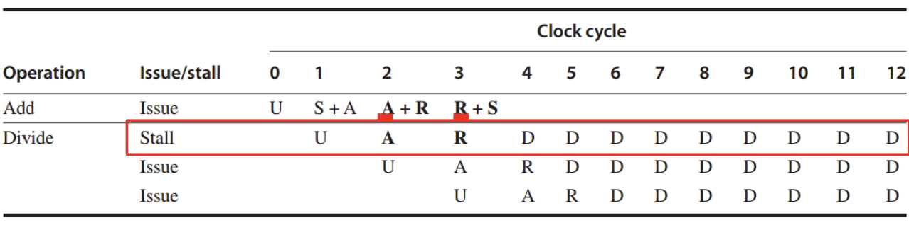
3.6 ILP Exploitation¶
- Compiler-based static parallelism
- only in domain-specific environments or in well-structured scientific applications with significant data-level parallelism
- Hardware-based dynamic parallelism
3.6.1 Dependence¶
- Two instructions that are not parallel
- Must be executed in order
- May often be partially overlapped
1. Data Dependence¶
- 直接依赖： 后一条指令用到了前一条指令的结果
- 间接依赖： 通过中间指令传递下来的依赖关系
（在讨论的流水线调度或并行性时，只关心不同指令之间的关系，不考虑add x1, x1, x1）
2. Name Dependence¶
两条指令使用了同一个寄存器或内存地址，但它们之间并没有真正传递数据
- True dependence: Read \(\rightarrow\) Write
- 指令 \(i\) 先读取某个位置，而指令 \(j\) 后写入同一个位置
- 约束：指令 \(j\) 不能在指令 \(i\) 读取之前就把数据写进去，否则 \(i\) 读到的就是新值（错误的数据）
- Output dependence：Write \(\rightarrow\) Write
- 指令 \(i\) 和指令 \(j\) 都要写入同一个位置
- 约束：必须保证写入的顺序正确。最终这个位置留下的值，必须是最后那条指令写入的值
Example
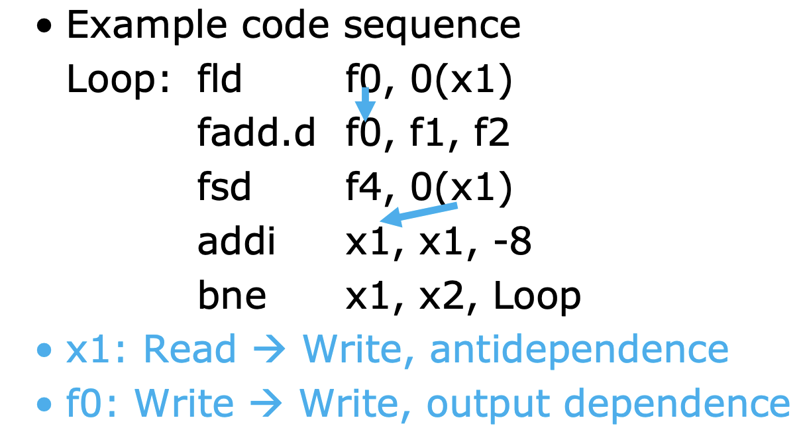
- 寄存器重命名：改变那些存在“名相关”的指令所使用的名字（寄存器编号或内存位置）
- 静态地由编译器完成：在代码编译阶段，编译器提前把指令的目标寄存器换成不冲突的寄存器
- 动态地由硬件完成：现代处理器内部有专门的硬件电路，在指令执行过程中实时进行重命名
Data Hazard
Hazard exists whenever
- there is a name/data dependence between instructions;
- they are close enough; AND
- the overlap during execution would change the order of access to the operand involved in the dependence
| 冒险类型 | 缩写 | 对应依赖类型 | 错误原因 | 常见程度 |
|---|---|---|---|---|
| 写后读 | RAW | True dependence | 读太早，读到旧值 | 最常见，必须解决 |
| 写后写 | WAW | Output dependence | 写乱序，最终值错了 | 较少见（需多条流水线） |
| 读后写 | WAR | Antidependence | 写太早，干扰了读 | 较少见（需乱序执行） |
3. Control Dependence¶
假设 \(s_1\) 需要在 \(p_1\) 成立的条件下执行，那么 \(s_1\) 控制依赖于 \(p_1\)
3.6.2 Property Constraints¶
Exception Behavior¶
无论如何改变指令的执行顺序（比如让指令 \(i\) 和 \(j\) 并行，或者 \(j\) 先于 \(i\) 执行），程序产生异常的方式必须和顺序执行时完全一致
- 如果按照原始代码顺序，第 10 行代码会发生除零错误，那么无论怎么优化，程序都必须表现为“在执行到第 10 行时报错”
- 不能因为把第 15 行的指令提到前面先执行了，导致第 15 行的错误先报出来，而掩盖了第 10 行的错误；或者第 10 行本该报错，结果因为乱序执行跳过了它，导致错误没被发现
Data Flow¶
必须保持实际的数据值流向正确。即，数据必须从产生它的指令流向消费它的指令
Example
add x1, x2, x3
beq x4, x0, L
sub x1, x5, x6
L: ...
or x7, x1, x8
- \(x_1\) of or instruction is data-dependent on both add and sub instructions
- value of \(x_1\) is control-dependent on beq
3.7 Static Scheduling¶
- Pipeline Scheduling：重新排列指令顺序，以避免流水线停顿
- Loop Unrolling：复制循环体多次，以增加相对于分支指令和开销指令的指令数量
3.7.1 Pipeline Scheduling¶
Example
for (int i = 999; i >=0; i--)
x[i] = x[i] + s;
8 cycles per loop
Loop: fld f0, 0(x1)
fadd.d f4, f0, f2 // 1-CC stall
fsd f4, 0(x1) // 2-CC stall
addi x1, x1, -8
bne x1, x2, Loop
调整代码执行循序，7 cycles per loop（只有 3 cycles 在真正处理数据）
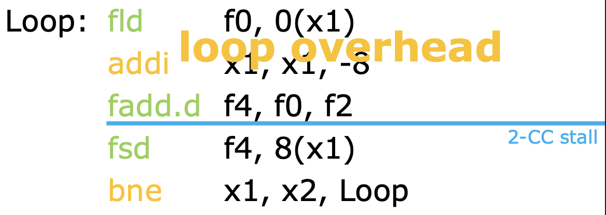
3.7.2 Loop Unrolling¶
- Replicate loop body multiple times given the same amount of overhead instructions
RISC-V code: 6.5-CC per op
Loop: fld f0, 0(x1) # highest-address element of x[i]
fadd.d f4, f0, f2
fsd f4, 0(x1) # //drop addi & bne
fld f6, -8(x1)
fadd.d f8, f6, f2
fsd f8, -8(x1) # //drop addi & bne
fld f0, -16(x1)
fadd.d f12, f0, f2
fsd f12, -16(x1) # //drop addi & bne
fld f14, -24(x1)
fadd.d f16, f14, f2
fsd f16, -24(x1)
addi x1, x1, -32 # 一次性更新指针（4个元素 * 8字节 = 32）
bne x1, x2, Loop # for lowest-address element
Loop Unrolling & Scheduling
- 可以进一步优化流水线，达到 3.5-CC per op
Loop: fld f0, 0(x1)
fld f6, -8(x1)
fld f0, -16(x1)
fld f14, -24(x1)
fadd.d f4, f0, f2
fadd.d f8, f6, f2
fadd.d f12, f0, f2
fadd.d f16, f14, f2
fsd f4, 0(x1)
fsd f8, -8(x1)
fsd f12, -16(x1)
fsd f16, -24(x1)
addi x1, x1, -32
bne x1, x2, Loop
3.8 Branch Handling¶
How to handle branches? Often you don’t have to
Frequent Critical Path
在优化时应该专注于最频繁的关键路径，就好像那个分支判断不存在一样
- 可以该侧路径进行指令重排或流水线调度，不用太担心另一侧路径的干扰
- 对于另一侧路径，可以使用预测或补偿代码来处理
3.8.1 Trace Scheduling¶
Trace：一系列最可能被执行到的基本块的序列
- 把这些基本块里的操作看作一个整体，然后压缩成更少、更宽的指令
- 即在一个时钟周期内并行执行更多指令
1. Trace Selection：找到那条最频繁的路径
2. Trace Compaction：把路径上的指令压缩进更少、更宽的指令包里- VLIW（Very long instruction word） 处理器通过把可以并行的指令压缩在一起发射，每个时钟周期可以同时发射多条指令。Trace Compaction 就是把长路径上的指令重新排列，尽可能填满每个时钟周期的槽位，减少空闲（bubble）。
Trace Unrolling¶
- Unrolled Trace
- 对于循环体构成的 Trace，编译器会做循环展开
- 通过展开，编译器可以在更大的范围内移动指令，从而填平流水线中的 bubble
- Trace Exit, where control flow jumps off the frequent path
- 这是预测失败的地方
- 此时编译器需要生成修复代码（Fix-up code）来处理这个意外情况
- Trace Entrance, where control flow returns to the trace
- 这是重新加入优化的地方
- 如果之前的循环预测失败（走向 Trace exit），或者循环刚开始，程序需要跳回到这条优化过的主路径上继续执行
Superblock & Fixup Code¶
Optimize：Superblock
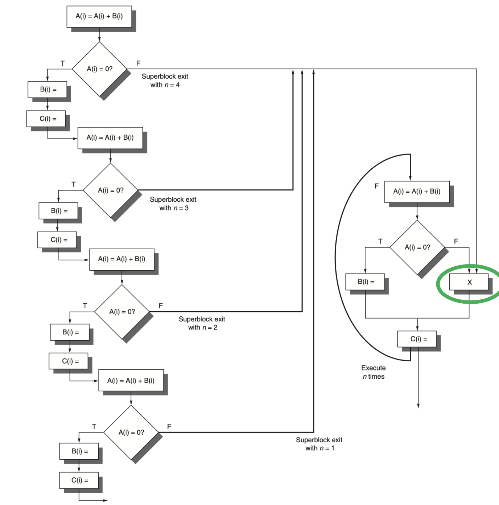
- too many entrances and exits amidst the trace
- 编译器需要处理多个“跳入点”，这使得指令调度（Instruction Scheduling）变得非常复杂
- Superblock：single entrance & multiple exits
- 单入口：代码只能从 Superblock 的最顶端进入
- 要执行这个 Superblock，就必须从第一条指令开始执行
- 编译器不需要担心中途进入的代码会破坏寄存器状态
- 多出口：代码可以在 Superblock 内部的多个点跳出
- 通常是因为遇到了分支指令，且预测失败，或者遇到了循环的结束条件
- 当跳出发生时，控制流会转移到“修复代码”或下一个基本块
- 单入口：代码只能从 Superblock 的最顶端进入
Fixup Code
"copy instructions to ensure correctness of all paths"
（复制指令以确保所有路径的正确性）
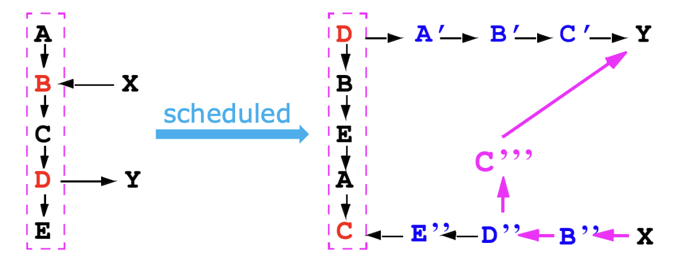
- 左侧：优化前的原始代码
- 这是一个基本块，指令按顺序执行：A → B → C → D → E
- 右侧：优化后的复杂局面与 Fixup Code
- 针对侧向跳出的修补：A' -> B' -> C'
Y 后续代码可能依赖 A、B、C 的结果，因此先执行这些指令再跳出 - 针对侧向进入的修补：B'' -> D'' -> E'' -> C
B 后续代码可能依赖 D，为保证逻辑正确，需要补上在 B 之后执行的指令
- 针对侧向跳出的修补：A' -> B' -> C'
采用 fixup code 和 Subexpression elimination 实现优化
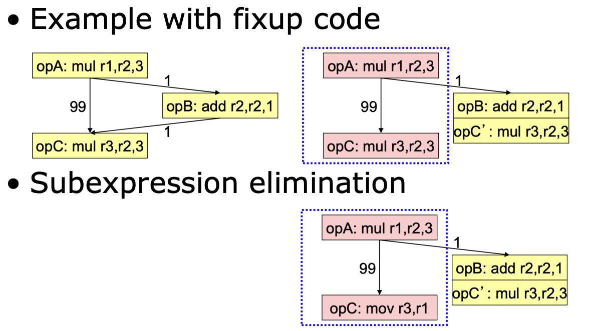
How to handle branches? When you have to
3.8.2 Branch Hazard¶
Control Hazard
- branches and jumps
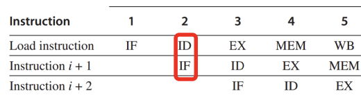
- Branch hazard
- a branch may or may not change PC to other values other than PC+4;
- taken branch: changes PC to its target address;
- untaken branch: falls through to PC+4;
- PC is not changed till the end of ID;
- a branch may or may not change PC to other values other than PC+4;
Redo IF¶
- 重做取指，等待 ID 结束后再进行取指
- If the branch is untaken, the stall is unnecessary.
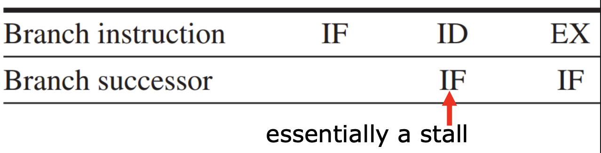
4 simple compile time schemes¶
- Freeze or flush the pipeline：hold or delete any instructions after the branch till the branch dst is known;
- Predicted-untaken: simply treat every branch as untaken;
- 如果不跳转，则没有 penalty
- 假设要跳转，需要把刚才取进来的那条指令变成“空指令”并重新取指
- Predicted-taken: simply treat every branch as taken;
- 硬性要求：CPU 必须在知道“是否跳转”之前，先知道“跳去哪里”
- Delayed branch: delay the branch execution after the next instruction;
- 使用Branch delay slot（分支延迟槽）
- 该槽内的指令无论分支是否跳转，都会被执行
Fetch Stage with BTB & DP¶
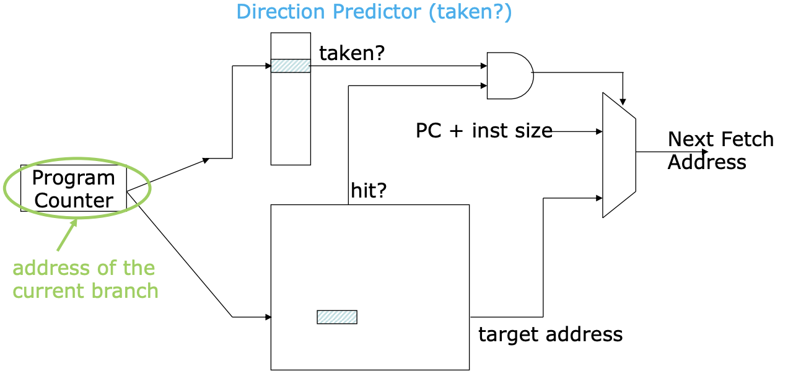
- 只有当 “预测跳转”且“BTB命中” 时，才应该采用分支目标地址
- Branch Target Buffer 如果 hit，会返回该分支上次跳转的目标地址
Dynamic Parallelism¶
3.9 Dynamic Branch Prediction¶
- 目标是解决 control hazard
3.9.1 N-bit predictor¶
1-bit predictor / last-time predictor：
- 使用分支预测缓冲区（Branch prediction buffer，或称 BHT：分支历史表，Branch History Table），通过分支地址的低位部分进行索引，并用一个比特位来标记追踪该分支的执行（taken）/ 不执行（untaken）状态
- bit 1 for taken; bit 0 for untaken
状态机如图：
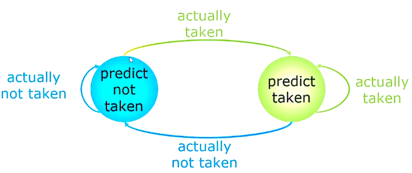
Basic structure
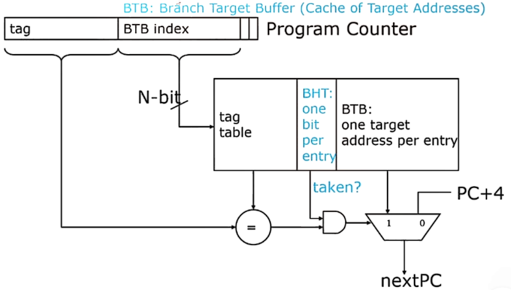
- Program Counter
- BTB index：N 位，用于索引 BTB/BHT 表项（直接定位到对应 entry）
- tag：用于和 tag table匹配验证（防止不同分支映射到同一 index 造成冲突）
- BHT：Branch History Table
- 每个entry存储1位，记录该分支上次的实际跳转结果
- 输出信号：
taken?—— 本次预测该分支是否跳转
- BTB：Branch Target Buffer
- 每个entry存储一个完整的目标地址
- 如果命中且预测 taken，提供跳转目标地址
2-bit predictor
- 使用 2 bit 来预测跳转；预测错误两次后才会改变预测的结果
- 极端情况下也有 50 %的准确率
- 状态机如下图所示：
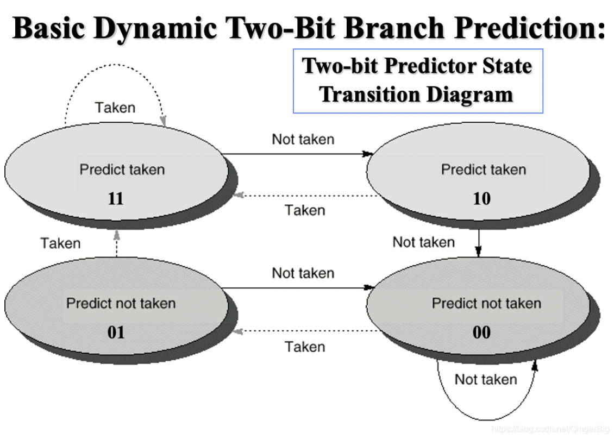
N-bit predictor
- 为每个分支分配一个 \(N\) 位计数器，取值范围从 \(0\) 到 \(2^N - 1\)
- 计数器值越高（\(\geq 2^{N-1}\)），表明该分支越倾向于跳转（taken）
- 计数器值越低（\(< 2^{N-1}\)），表明该分支越倾向于不跳转（untaken）
3.9.2 Local Predictor¶
- 一个分支的当前结果，可能与该分支自身的历史执行模式相关（而不仅仅是"上次执行的结果"）
BHT（Branch History Table）结构
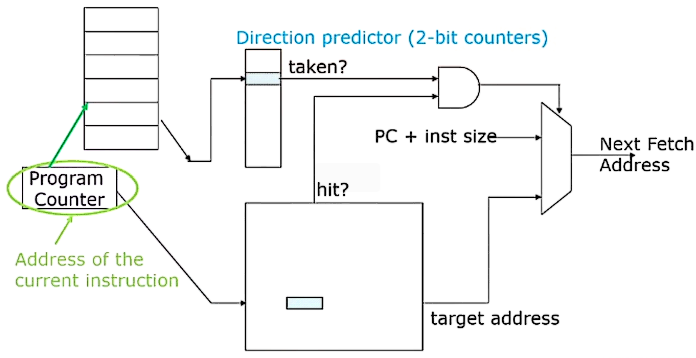
- 使用PC索引，映射到 BHT 中的一个特定的 entry
- entry 是一个 \(m\) 位的移位寄存器（Branch History Register, BHR），记录这一条特定指令过去 \(m\) 次的执行历史
- 输出的BHR值（即执行历史），作为 Direction predictor 的索引/地址
- 方向预测器根据存储的值判断是否跳转
（下方是从 BTB 中读取跳转指令的地址）
Example
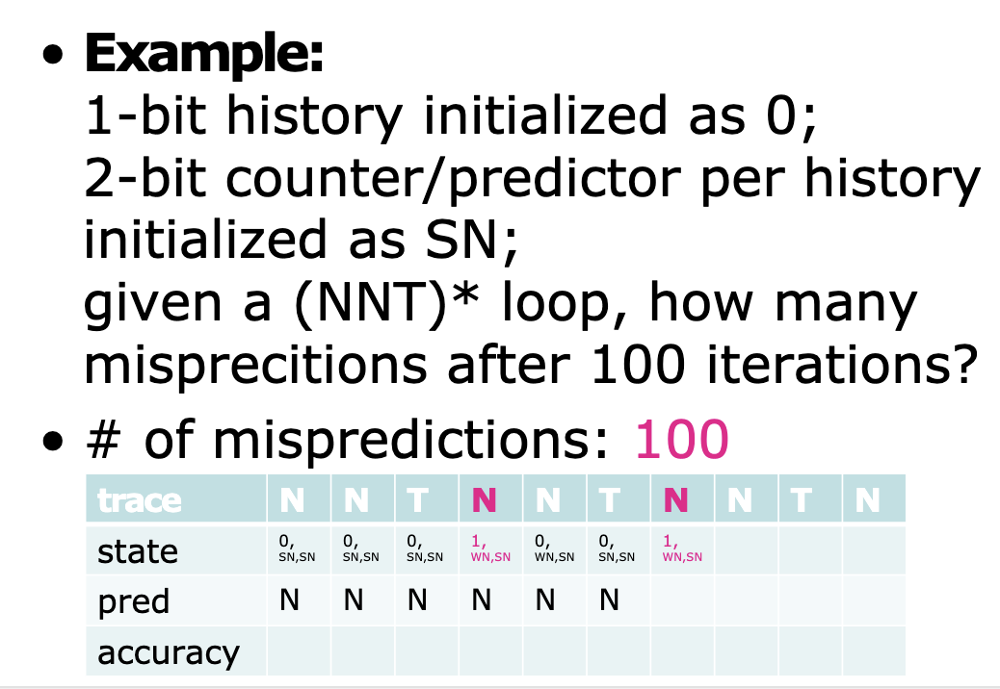
3.9.3 Correlating Branch Prediction¶
- 利用其他分支的行为来做出预测；基于"上次遇到相同全局分支历史时"该分支的结果进行预测
Two-Level Predictor¶
also called correlating predictors
全局历史寄存器（GHR）
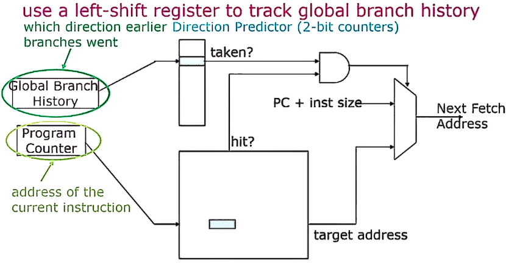
- 一个全局共享的 m 位移位寄存器（注意只有一个!！）
- 每执行一个分支，将其结果（taken=1, untaken=0）左移进 GHR
- 记录最近 m 个分支的全局执行路径
(m, n) predictor结构大致如下：
- m（第一级）：\(m\) 位的移位寄存器，记录最近发生的 m 次分支指令的行为
- n（第二级）：针对每一种历史情况，使用一个 \(n\) 位预测器（通常是 2-bit 状态机）来预测
PlanA: Global history + PC Concatenation¶
系统会维护一个模式历史表（Pattern History Table, PHT）
- 根据最近 \(m\) 次分支的行为，会产生一个 \(m\) 位的二进制数
- 假设 \(m=2\)，最近两次是“T-NT”，那就是
10
- 假设 \(m=2\)，最近两次是“T-NT”，那就是
- 将 \(m\) 位历史和 PC 的低位拼接起来，去定位 PHT 中的某一个 \(n\) 位计数器
Example
如图，\(m=2\), \(n=2\), \(\text{branch address}=4\text{-bit}\)
- 分支地址 4-bit 对应 16 行（16 entires），每行对应一条分支
- \(m\) 位的移位寄存器记录了最近 2 次的跳转情况，对应 4 列
- PC + m 位历史对应了一个 predictor，预测是否跳转
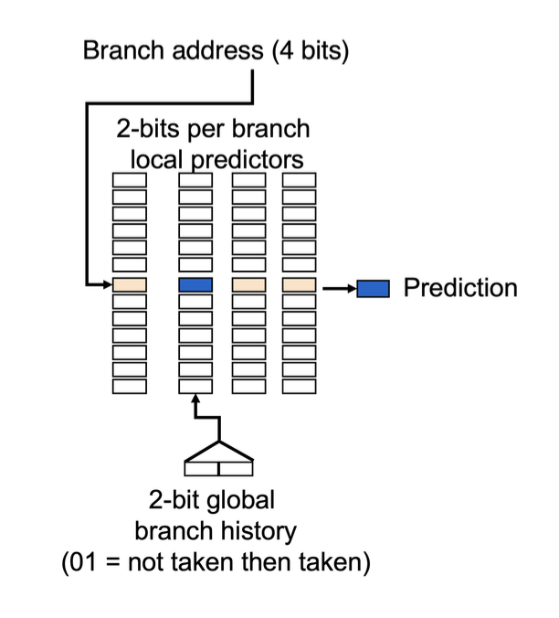
存储开销：
- 每个分支的 PHT 存储成本 = \(2^m × n\) bits
- 如果地址索引为 \(b\) bit（对应 \(2^b\) 个 entry），总存储成本 = \(2^m × n × 2^b\) bits
PlanB: gshare predictor¶
Also called Hybrid/Alloyed Predictor
- 利用了哈希，所有分支共享一张表
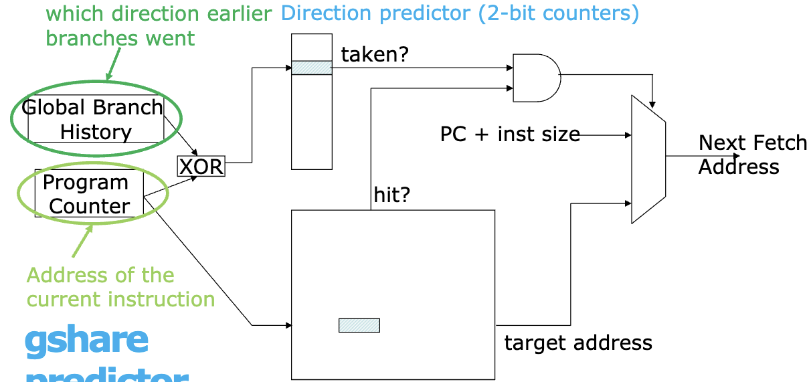
利用移位寄存器追踪最近 \(m\) 次分支，然后把“全局历史”和 PC 的低几位做 XOR 操作，用于查表预测
- 根据这个结果进行选择，从 \(1024\) 个 2-bit predictors 中选择一个进行预测
- 免去了 \(1024\times 1024\) 个预测器的存储开销
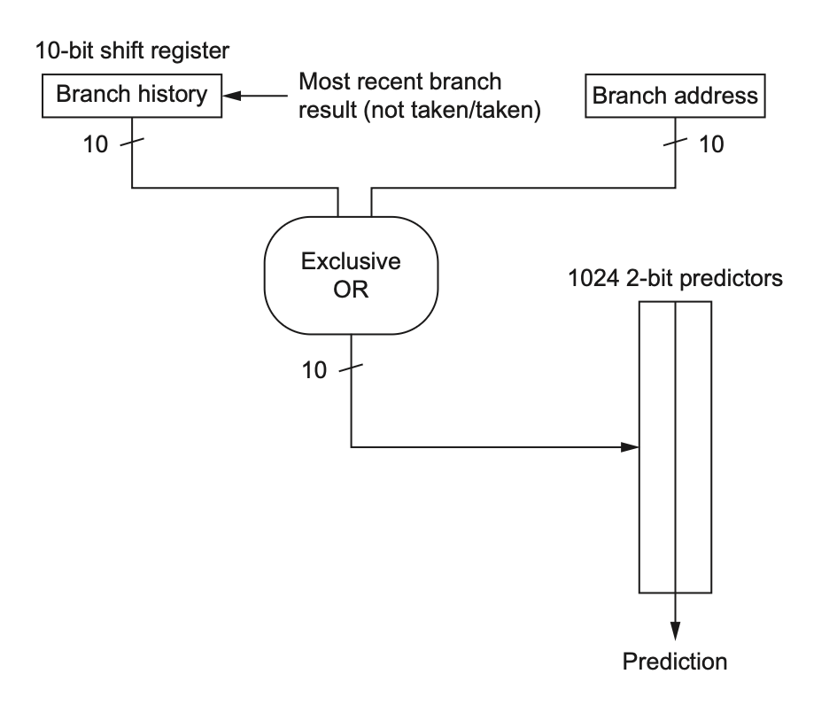
3.9.4 Tournament Predictors¶
Also called Hybrid Predictor，使用多种预测器，并采取表现最好的那一个
- 主要结构：Global Predictors, Local Predictors 和 Selector
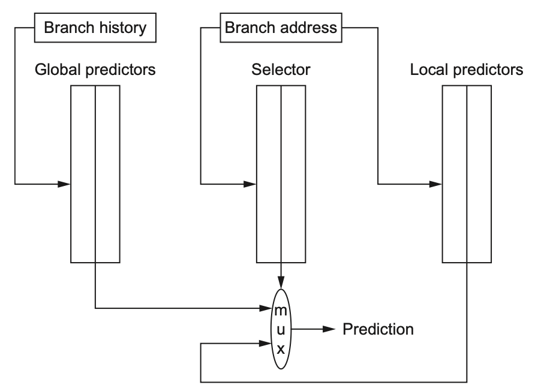
工作原理：
- 当一条分支指令进来时，全局预测器和局部预测器同时给出各自的预测结果
- Branch history（全局历史）对应上文的 correlating predictor
- Branch address 定位该指令的局部历史，对应 local predictor
- 选择决策：选择器内部维护着一张表（通常为一组 2-bit 计数器）
它会根据 PC 值查找：对于这一条特定的指令，过去是全局预测器更准，还是局部预测器更准 - 多路选择 (Mux)：选择器控制 mux 选择最终的预测结果
3.9.5 Tagged Hybrid Predictors（TAGE）¶
TAGE = 多个带标签的全局历史表 + 几何级数的 history 长度 + 最长匹配优先
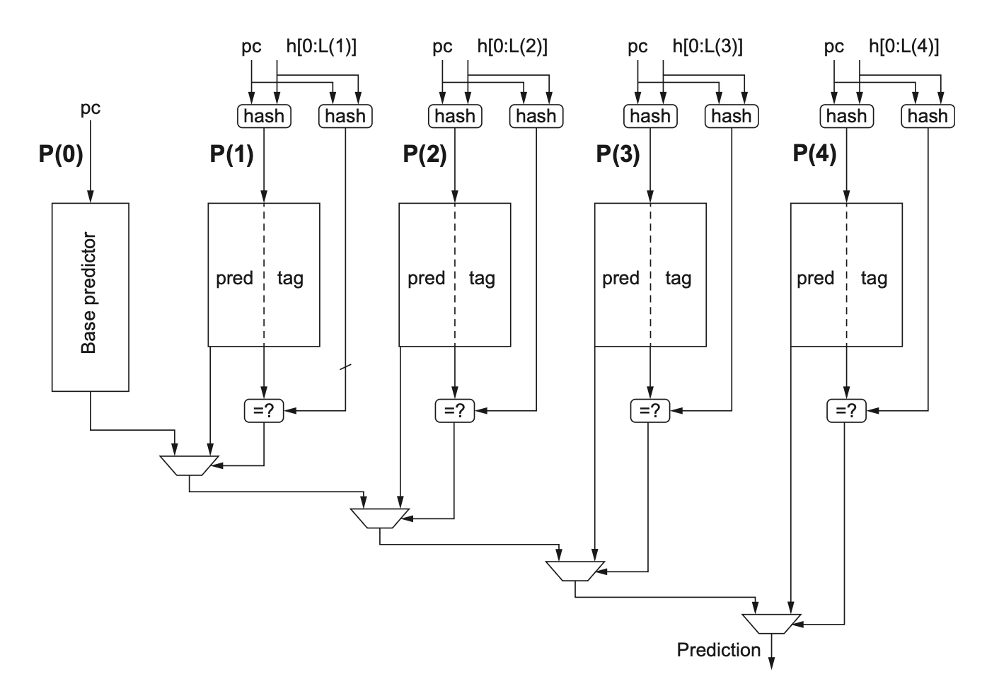
- Multiple History Lengths
TAGE predictor 采用了一系列并行的全局预测表，每张表带各自的 Tag- 几何级数增长：这些表使用的分支历史长度（History Length）构成一个几何级数（例如：2, 4, 8, 16, 32... 个比特）
- Tagged Entries
普通的预测表（如 BHT）通过哈希索引找到 2-bit 计数器，这容易产生冲突（Aliasing），即两个不相关的分支映射到了同一个项。- 哈希索引：对每个表使用 PC 和全局历史共同哈希计算得出索引
- 检查表中对应项的 tag 是否匹配
- Choose the longest history
当 CPU 需要进行分支预测时，它会查询所有的表：- 多表匹配：可能会有多个表（历史长短不一）同时产生了标签匹配
- 最长优先：系统会选择匹配标签且历史最长的那个预测器作为最终结果
3.9.6 Summary of Dynamic Branch Prediction¶
Dynamic Branch Prediction：已经成为标量处理器（Scalar Processor）提高性能的重要组成部分，用于减少控制相关带来的流水线停顿。
| 技术 | 作用 / 核心思想 |
|---|---|
| Branch History Table (BHT) | 使用 2-bit 饱和计数器记录分支历史，提高循环（Loop）分支的预测准确率。 |
| Correlation Prediction | 利用最近执行过的分支结果预测当前分支。相关性可能来自：①不同分支之间；②同一分支的不同历史执行。 |
| Tournament Predictor | 同时使用多种预测器（如局部预测器和全局预测器），再通过选择器（Chooser）动态决定采用哪个预测结果。 |
| Tagged Hybrid Predictor | 为不同分支及不同历史模式维护专门的预测项，通过 Tag 区分，提高预测精度并减少别名冲突（Aliasing）。 |
| Branch Target Buffer (BTB) | 存储分支指令地址及其目标地址，在预测分支发生时直接提供跳转目标，减少取指延迟。 |
| Predicated Execution | 将部分条件分支转换为条件执行指令，从而减少分支数量和错误预测（Misprediction）次数。 |
| Return Address Stack (RAS) | 利用栈结构保存函数调用的返回地址，用于准确预测函数返回（Return）这种间接跳转（Indirect Jump）。 |
3.10 Dynamic Scheduling¶
目标是通过乱序执行（out-of-order execution）解决 data hazard
Strategy
执行阶段拆分为：IF->Issue->Read-Operands->EX->MEM->WB
- Issue from IF: in order
- 指令从取指阶段出来时，严格按照程序原本写的顺序进入流水线
- Read operands to EX: out of order
- 当指令进入执行阶段（EX）准备读取操作数时，如果满足两个条件，就可以“插队”先执行：
1. Sufficient resources：所需的硬件资源（如加法器、乘法器）是空闲的
2. No data dependences：所需的数据已经准备好了，不依赖前面还没算完的结果
- 当指令进入执行阶段（EX）准备读取操作数时，如果满足两个条件，就可以“插队”先执行：
- Scheduling policy: 遇到停顿就跳过
- 当遇到一条指令卡住了（stalling，通常是因为缺数据或资源冲突），调度器会去检查后面的指令。如果后面的指令不依赖这条卡住的指令，也不依赖其他正在运行但还没完的指令，那就把后面的指令提上来先执行。
- How to schedule: use a centralized Hazard Detection and Resolution Unit
3.10.1 Scoreboarding¶
记分板是一种硬件机制，用来解决指令在乱序执行（Out-of-Order Execution） 时的冲突问题
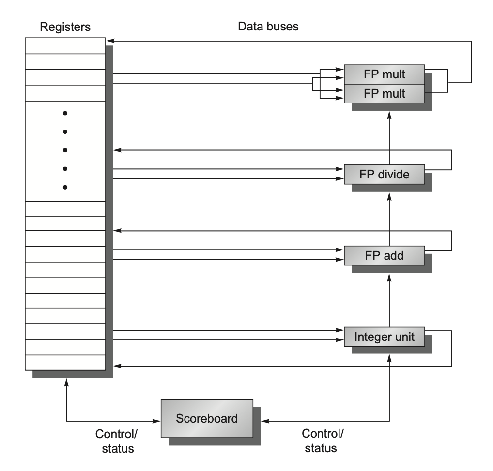
Three part of Scoreboarding
记分板维护了三张表来记录系统的实时状态：
- Instruction status（指令状态表）
- 记录每一条正在流水线中执行的指令当前处于哪个阶段
- Functional unit status（功能单元状态表）
- 记录所有的硬件资源（如浮点加法器、浮点乘法器、整数单元）是忙还是闲。
如果忙，是被哪条指令占用的？操作数准备好了吗？ - 作用：防止资源冲突
- 记录所有的硬件资源（如浮点加法器、浮点乘法器、整数单元）是忙还是闲。
- Register result status（寄存器结果状态表）
- 记录每一个寄存器将来会被哪条指令写入结果。
- 作用：解决数据冒险（Data Hazard）
- RAW（写后读）：如果指令 B 想读寄存器 \(F_0\)，但记分板查表发现 \(F_0\) 正在被指令 A 计算（还没写完），记分板就会让指令 B 暂停，直到指令 A 写完
- WAW（写后写）：防止两条指令乱序写回同一个寄存器导致结果错误
Instruction status¶
记分板将指令的处理过程标准化为四个阶段：
- Issue（发射/ issuing）：
- FU 空闲（避免结构冲突）
- 正在执行的指令不写回与本指令相同的 Rd（避免 WAW）
- 满足上述两条规则就“发射”指令
- Read operands（读取操作数）：
- 等待数据准备好（没有 RAW 冲突），然后读取源操作数
- Execution（执行）：
- 功能单元开始干活（比如做加法）
- Write back（写回）：
- 查看要写会的目的寄存器是否在某个 FU 的 ready list 中为 yes
- 如果是 yes，说明有指令正在读寄存器，等读完再写回（避免WAR）
"Omit memory access because the out-of-order focuses more on FP operations"
- 为了简化模型，这里省略了“内存访问”阶段
Functional unit status¶
- 这张表记录了 CPU 里每一个功能单元当前的详细工作状态。记分板通过查阅这张表，来决定能不能把新的指令派发给这个单元。
- 对于每一个功能单元，记分板都维护了以下 9 个信息位：
- Busy：该单元忙/闲标志
- Op（操作码）：记录当前单元要执行的具体操作
- Fi（目标寄存器）：记录这条指令计算完的结果要写到哪个寄存器去
- Fj, Fk（源寄存器编号）：记录这条指令需要的两个输入数据来自哪里
- Qj, Qk（生产源数据的单元）：这是最关键的两个字段，用来解决数据依赖
- 如果为空（Null），说明数据已经准备好了（可能在寄存器堆里）
- 如果存的是“加法器 1”，说明要等“加法器 1”算完，才能拿到数据
- Rj, Rk（就绪标志）：操作数是否就绪
Register result status¶
- 指示哪个功能单元将写入该寄存器（如果存在一条活跃指令以该寄存器为目的操作数）
- 只要没有待处理的指令将写入该寄存器，即置为空
Example
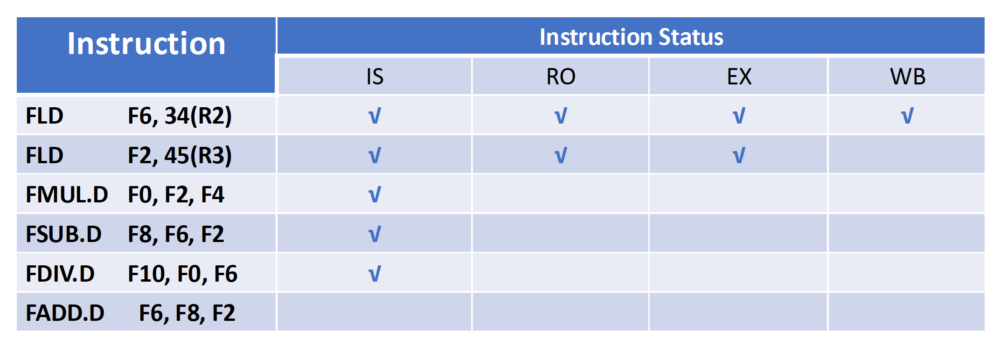
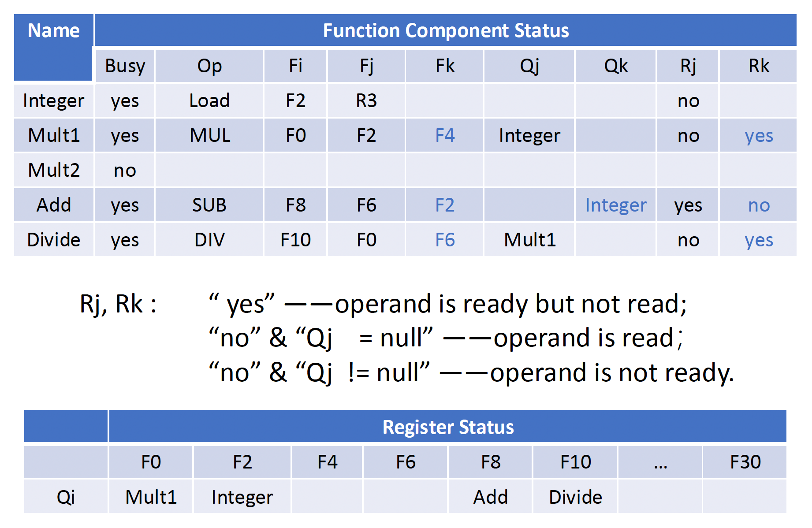
3.10.2 Tomasulo¶
Tomasula 相较于 Scoreboard 的优势：
- 分布式硬件逻辑：
- Scoreboard 采用集中的硬件单元记录指令状态，结构过于复杂；
- Tomasula 把冒险检测逻辑分布在 load/store buffer 和 reservation station 中，硬件更容易拓展
- 消除假相关（Register Renaming）：
- 通过寄存器重命名消除 WAW 和 WAR 冒险导致的停顿
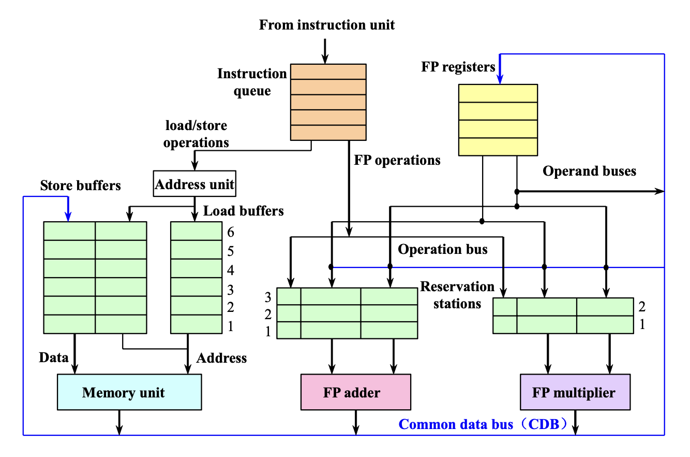
Register Renaming¶
硬件如何实现 Register Renaming？
- Tomasulo 通过隐式的重命名，避免了 WAW 和 WAR
- 寄存器不再直接指向一个值，而是指向“哪个 Reservation Station 将产生这个值”。
在使用托马苏洛算法的动态调度处理器中，
- WAR 和 WAW 可通过寄存器重命名(register renaming) 来消除
- 重命名所有的目标寄存器（包括等待先前指令读 / 写的寄存器），这样的话乱序写操作就不会影响到任何依赖于操作数先前值的指令
- 如果有足够多可用的寄存器的话，编译器就会实现这种重命名
- RAW 可通过在操作数空闲时就执行指令来避免
Scoreboard 使用显式（explicit）的寄存器重命名，即真正为其分配了新的寄存器。
How to rename registers?
原始代码如下：
fdiv.d f0, f2, f4
fadd.d f6, f0, f8
fsd f6, 0(x1)
fsub.d f8, f10, f14
fmul.d f6, f10, f8
- WAR Hazard: rename latter/destination
- Instr 2&4; Instr 3&5
- WAW Hazard: rename former
- Instr 2&5
- 在修改完 destination 后，重命名后续的 resource
fdiv.d f0, f2, f4
fadd.d f6_old, f0, f8
fsd f6_old, 0(x1)
fsub.d f8_new, f10, f14
fmul.d f6, f10, f8_new
Tomasulo's Algorithm¶
- Issue / Dispatch：
- 按顺序从指令队列取下一条指令
- 为它找到一个空闲的保留站（相当于 renaming；如果没有 \(\rightarrow\) 结构冒险 \(\rightarrow\) 停顿）
- 读操作数：
- 源操作数已经算好 \(\rightarrow\) 直接把值（\(V_j\) / \(V_k\)）从寄存器拷进保留站
- 源操作数还没算完 \(\rightarrow\) 记录"谁在生产这个数"（\(Q_j\) / \(Q_k\)）
- 记录目标：
- 把目标寄存器在寄存器状态表中指向"这条指令的保留站编号"
这一步实现了寄存器重命名，消除了寄存器内的 WAR 和 WAW 冒险
- 把目标寄存器在寄存器状态表中指向"这条指令的保留站编号"
- Execute：
- 保留站持续监听 CDB：检查 \(Q_j\) / \(Q_k\) 标签是否匹配到广播的结果
- 操作数就绪：把 \(Q\) 清零、把值填入 \(V\)，准备执行
- 所有操作数都到齐 \(\rightarrow\) 立即把操作数送进对应的功能单元开始计算
- 有多条指令争用同一单元时 \(\rightarrow\) 浮点单元是随机挑选；Load/Store 按优先级处理
- Load/Store 的两步执行：
- 基寄存器可用时，计算有效地址（基寄存器 + 偏移）
- 将有效地址放到 Load/Store Buffer 等待内存单元
- Load → 内存单元空闲就立刻执行；Store \(\rightarrow\) 等到数据和内存单元都到位了再执行
这一步解决了RAW 冒险：数据没到就等，到了立刻执行
- Load/Store 的两步执行：
- Write Result：
- 功能单元把计算结果放到 CDB（公共数据总线） 上
- CDB 是广播机制：一次广播，所有监听者同时看到
- 谁在听 CDB？
- 寄存器堆 \(\rightarrow\) 把结果写回对应寄存器
- 所有保留站 \(\rightarrow\) 如果自己的 \(Q_j\) / \(Q_k\) 匹配了广播的标签 \(\rightarrow\) 立即把值填进去
- Store Buffer \(\rightarrow\) 接收要存的数据
- 对于 Store 操作：等值和地址都到位后，才真正写入内存
Reservation Station Status
- 指令状态表(instruction status table)：仅用于帮助我们理解算法，实际上并不属于硬件的一部分
- 保留站表(reservation stattion table)：保留每个已发射的运算的状态
| 字段 | 全称 | 作用 |
|---|---|---|
| \(O_p\) | Operation | 操作码：记录这条指令具体要做什么操作，发给功能单元（FU） |
| \(O_j\), \(O_k\) | — | 源操作数产生者的保留站编号：一种指针机制，用来解决数据依赖；值为 0 表示数据已准备好 |
| \(V_j\), \(V_k\) | Value | 源操作数的实际数值：存放真实的数据 |
| \(A\) | Address | 地址信息或立即数，专门用于内存访问指令（Load/Store） |
| \(\text{Busy}\) | 这是一个布尔值，忙标志位 |
- 寄存器状态表(register status table)：包含结果需要被存储到寄存器的运算的保留站数量
| 字段 | f0 | f2 | f4 | f6 | ... | ... |
|---|---|---|---|---|---|---|
| \(O_i\) | Mult1 | Mult2 |
3.11 Hardware Speculation¶
- out-of-order execution & in-order commit
- 指令提交（Instruction Commit）
只有当 CPU 确认之前的猜测全部正确（比如分支预测正确，且前面没有发生除零错误等异常），指令变成“非推测性”时，才能修改寄存器或内存。这个过程就叫==“提交(commit)”==。 - 重排序缓冲区（ReOrder Buffer, ROB)
- 暂存结果：指令算出结果后，它不能直接写回寄存器，而是先把结果存在 ROB
- 维护顺序：ROB 记录了所有正在执行中的指令的原始顺序
- 统一提交：ROB 会检查队头的指令，如果队头指令算完了，ROB 就把它正式写入寄存器（提交），从而保证了“顺序提交”。
- 错误恢复：如果发生分支预测错误，直接把 ROB 里相关的条目清空即可
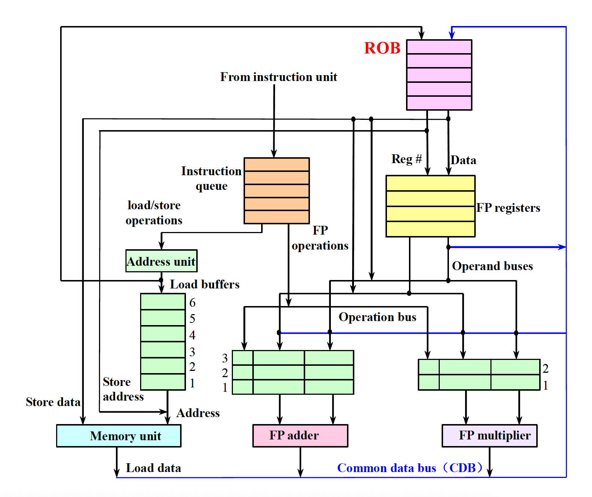
ROB 里的每一项包含了 4 个字段：
- Instruction Type：表明该指令是分支指令，存储指令，还是寄存器操作
- Destination：指令结果应该被写入的寄存器编号（ALU 和加载指令）或内存地址（存储指令）
- Value：保留指令结果的值，直到指令提交
- Ready：表明指令是否执行完毕，此时值已经准备好了
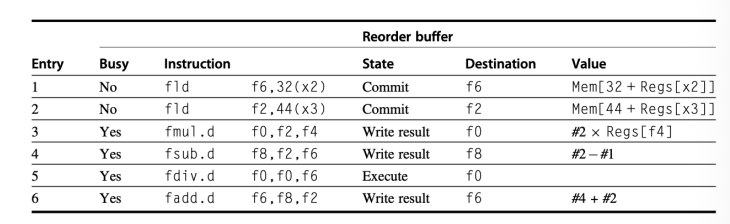
指令的执行分为四步：
- 发射（Issue）：
- 从指令队列顺序获取指令
- 若存在空的保留站以及空的 ROB enty，则发射该指令；如果不存在，则停止发射
- 如果操作数在寄存器或 ROB 上可用的话，将操作数送到保留站内
- 为结果分配的 ROB 的项数也要送到保留站内，这样的话当结果被放在 CDB 上时，可以用这个数字来为该结果打标签
- 执行（Execute）：
- 如果存在操作数不可用，监控 CDB 直到操作数被计算出来
- 当某个操作的所有操作数都可用时，执行该操作
- 写入结果（Write Result）：
- 当结果可用时，将结果以及 ROB 标签写入 CDB，CDB 会广播到 ROB 以及保留站内
- 提交(commit)：有以下三种情况
- 正常提交（当指令到达 ROB 头，且对应值在缓冲区）：更新寄存器，并移除 ROB 内的指令
- 提交存储指令：和前一种情况类似，只是更新的东西变成了内存
- 错误预测的分支指令（即推测错误）：清除 ROB 里的内容，重新开始分支指令后的正确指令
下面展示了推测处理器的具体运行步骤：
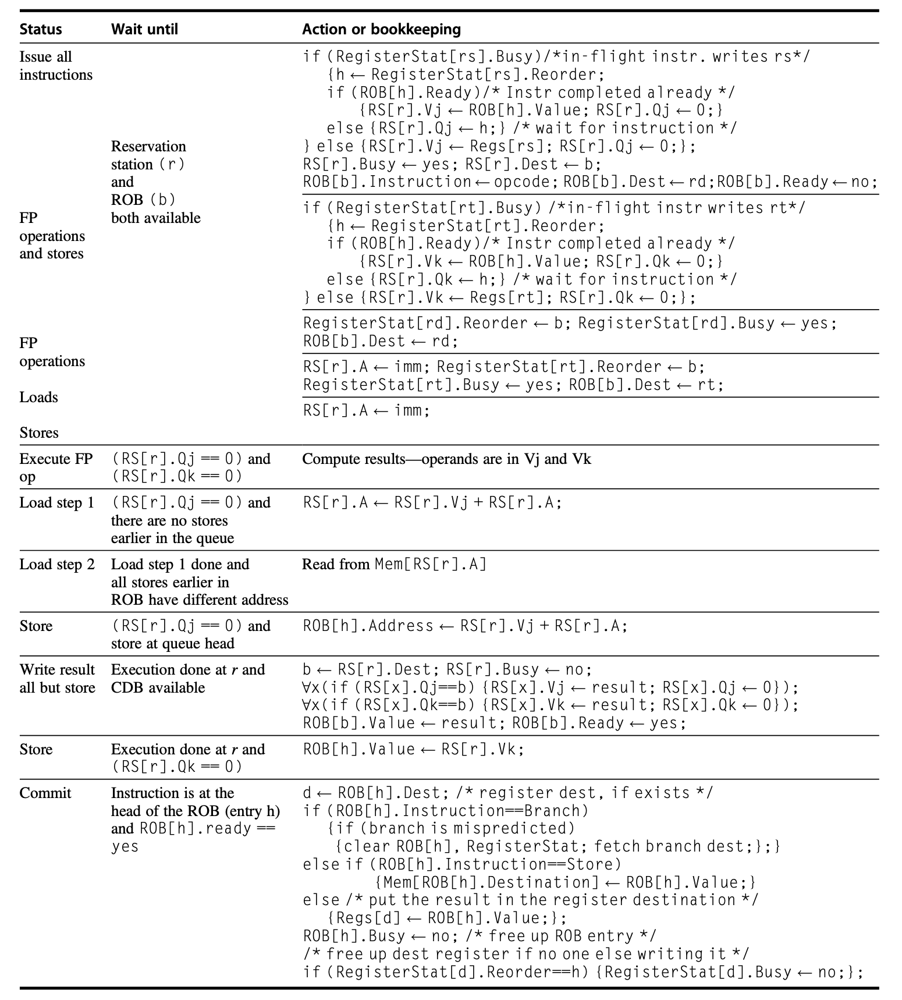
Memory Disambiguation
和 register 一样，内存中的数据也可能发生 RAW 冲突
ST 0(R2), R5
LD R6, 0(R3)
编译时两个地址可能还无法确定，因此在 load 阶段需要在 ROB 中比对 store 相关的地址。
3.12 Multi-Issue¶
| 架构类型 | 发射结构 | 冲突检测 | 调度方式 | 主要特点 | 代表处理器 |
|---|---|---|---|---|---|
| 静态超标量（Superscalar Static） | 动态发射 | 硬件检测 | 静态调度 | 顺序执行 | Sun UltraSPARC II |
| 动态超标量（Superscalar Dynamic） | 动态发射 | 硬件检测 | 动态调度 | 部分乱序执行 | IBM Power2 |
| 推测超标量（Superscalar Speculative） | 动态发射 | 硬件检测 | 带推测的动态调度 | 支持推测执行的乱序执行 | Pentium III/4、MIPS R10K、Alpha 21264 |
| VLIW / LIW | 静态发射 | 软件检测 | 静态调度 | 发射包内不存在冲突 | Trimedia、i860 |
| EPIC | 主要静态 | 主要软件 | 主要静态 | 编译器显式标注依赖关系 | Itanium |
Superscalar¶
超标量的核心目标是在一个时钟周期内发射多条指令，从而进一步挖掘 ILP。多发射处理器的性能提升来自更宽的 issue width，但硬件复杂度也会随 issue width 迅速上升。
Static Superscalar¶
编译器准备好一个可能并行的 instruction group，硬件再在 issue 阶段确认。
- 如果同一组指令之间没有依赖，也没有结构冲突，就可以在同一个周期内发射；
- 否则只能发射其中一部分，剩下的指令需要等待。
Issue Packet
- 一组尝试在同一个 cycle 中发射的指令
- packet 内部：需要检查指令之间是否互相依赖，是否争用同一资源；
- packet 之间：需要检查当前 packet 是否依赖前面已经发射但尚未完成的指令。
静态超标量的主要问题是 issue check 过于复杂。即使只是 2-issue，硬件也要同时检查：
- 2 条指令的 opcode；
- 多个 register specifiers；
- 两条指令之间是否存在数据依赖；
- 两条指令是否使用同一个功能单元或同一个写回端口。
如果扩展到 \(N\)-issue，需要比较的指令对数大致随 \(N^2\) 增长：
- 这会限制 clock cycle time，因为 issue stage 必须在一个周期内完成大量比较和控制决策。
Dynamic Superscalar¶
它不再完全依赖编译器把指令排好，而是让硬件在运行选择多条指令发射或执行。
- Pipeline：把 issue check 拆成多个更短的阶段，即流水线化。
- Widen the issue logic：增加 issue logic 的宽度，一次能检查更多候选指令。
Loop Example
一个典型循环如下：
Loop:
L.D F0, 0(R1) # load X[i]
ADD.D F4, F0, F2 # FP add
S.D F4, 0(R1) # store result
DADDIU R1, R1, #-8 # update pointer
BNE R1, R2, Loop # loop branch
这段循环中的限制如下：
L.D -> ADD.D存在 RAW dependence，ADD.D必须等 load 的值可用；ADD.D -> S.D存在 RAW dependence，store 需要等待F4的结果；DADDIU -> BNE存在 RAW dependence，branch 依赖更新后的R1；- load / store 都需要 memory unit；
- 地址计算、整数加法、branch 判断可能都竞争 integer unit。
如果处理器只有：
- 1 个 memory unit；1 个 integer unit；1 个 FP unit；
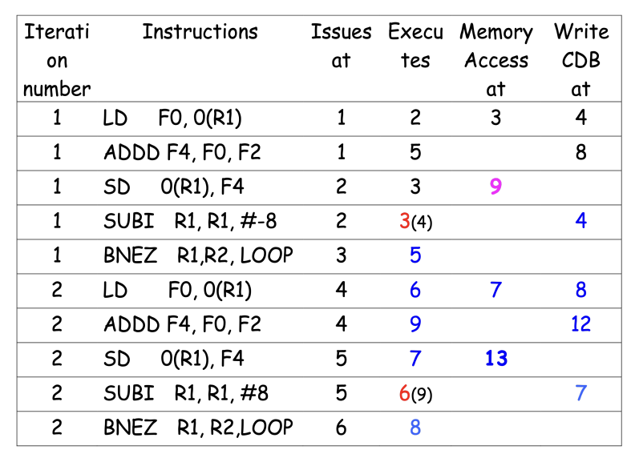
- 可以看到即使 issue logic 很宽，实际执行时也可能被 functional unit 限制。图中 integer unit 就成为了瓶颈。（括号内是改进前的结果）
- 一个改进方向是把地址计算和真正访存拆开并流水化。
- 但这种优化也会引入新的结构冲突，例如多条指令可能在同一周期准备写回结果。如果只有一条 write CDB / write-back port，就需要错开写回时间，或者增加多条 bus / CDB。
Speculative Superscalar¶
把前面的 hardware speculation 扩展到多发射处理器中，这种结构通常需要：
- branch prediction：预测下一批要取的指令；
- register renaming：消除 WAR / WAW；
- reservation stations / issue queue：保存等待执行的指令；
- ROB：保存推测执行结果，并保证 in-order commit；
- multiple commit：每个周期可能提交多条已经完成且非推测的指令。
多发射 + 推测执行的关键
在普通 speculation 处理器中，每次 commit 指令需要检查 ROB 队头是否 ready。在 Superscalar speculative processor，每个周期可能尝试 commit 多条指令，因此硬件还要处理：
- ROB 队头连续多条指令是否都 ready；
- 这些指令之间是否包含 branch、store 或 exception；
- Store 是否可以真正更新 memory；
- 如果其中一条 branch mispredict，后面的推测结果必须全部丢弃。
| 加入预测前 | 加入后 |
|---|---|
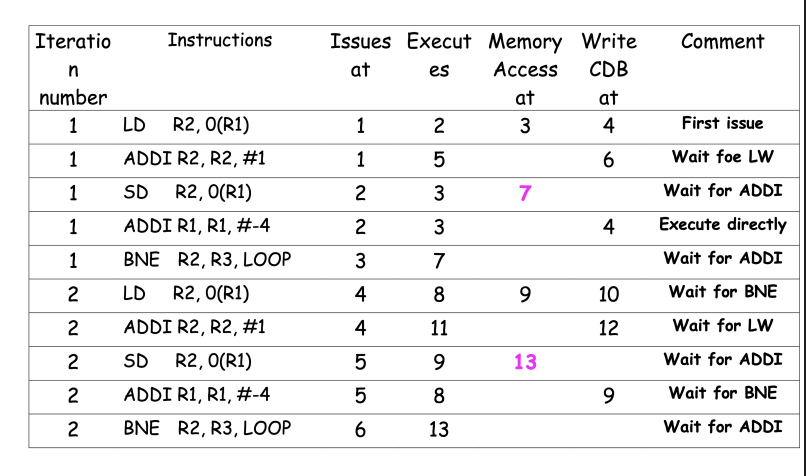 |
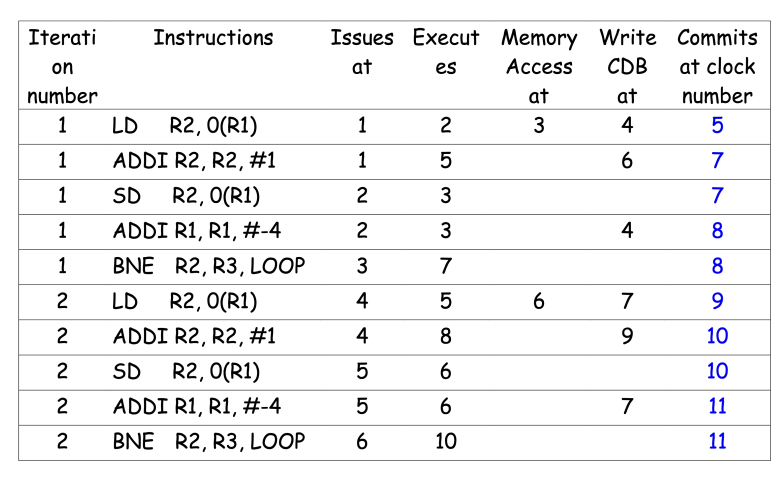 |
A[0] = A[0] + B[0];
for(i=1;i<99;i++){
B[i+1] = C[i] + D[i]
}